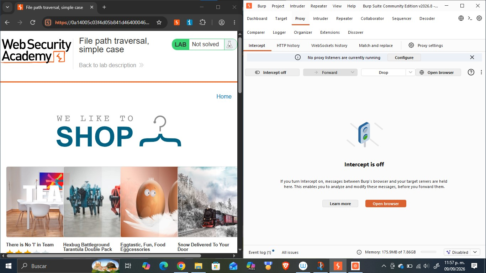
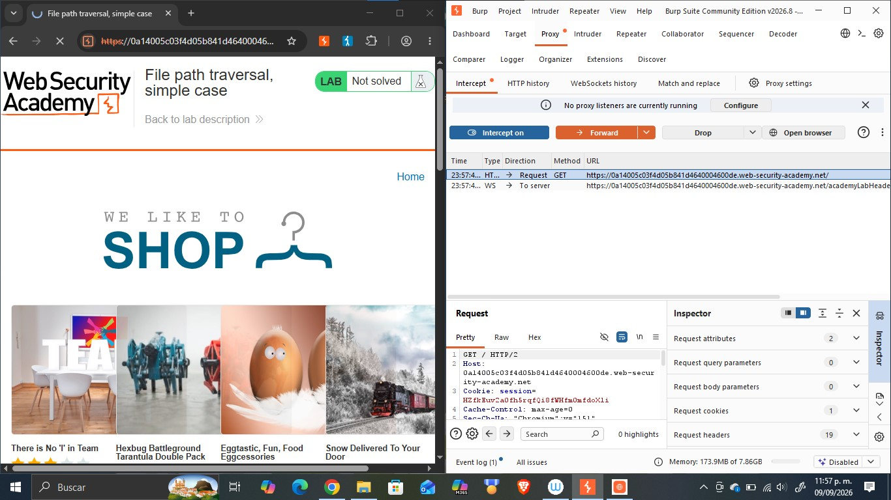
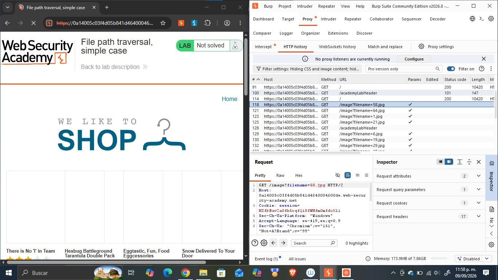
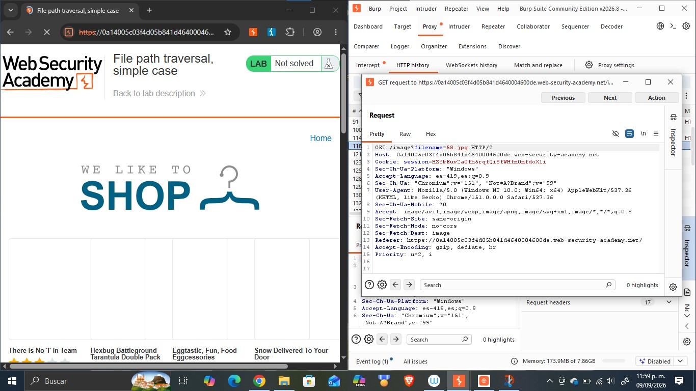
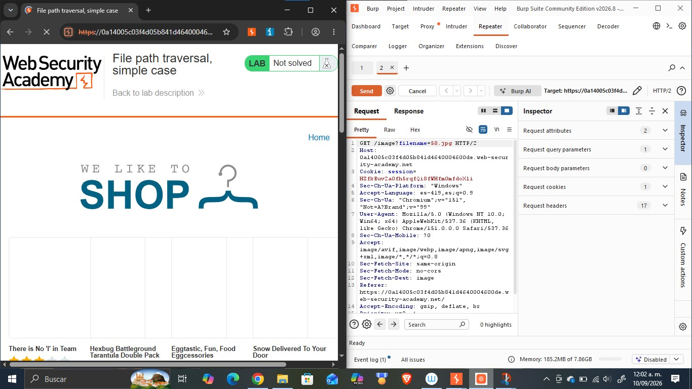
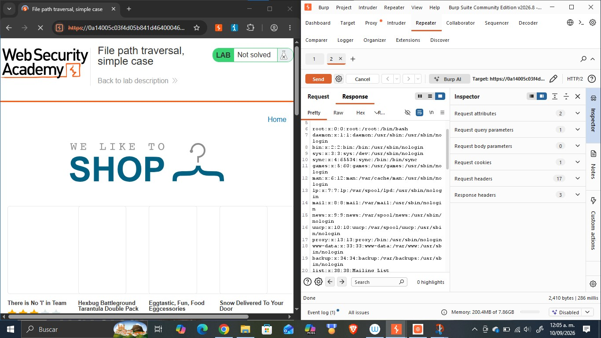
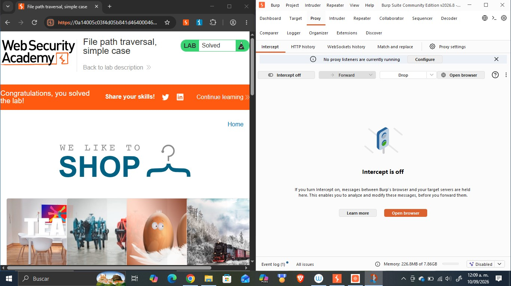

Objetivo
Este reporte documenta la resolución del laboratorio «File path traversal, simple case» de PortSwigger Web Security Academy, cuyo objetivo es identificar y explotar una vulnerabilidad de path traversal (o directory traversal) en la funcionalidad de visualización de imágenes de una tienda en línea, con el fin de acceder a archivos del sistema operativo del servidor que no deberían ser accesibles públicamente. La actividad forma parte del portafolio de evidencias «Road to Hall of Fame» de la asignatura CNO IV Seguridad Informática y busca reforzar la comprensión práctica de esta vulnerabilidad clasificada dentro de la categoría A01:2021 Broken Access Control del OWASP Top 10 así como el manejo profesional de herramientas de interceptación de tráfico HTTP como Burp Suite.
Desarrollo
Esta sección documenta el laboratorio realizado en la práctica: su ficha técnica, la fundamentación de la vulnerabilidad explotada, el procedimiento seguido paso a paso, la evidencia fotográfica recolectada, el análisis del payload utilizado y las medidas de mitigación recomendadas.
| Nombre del Laboratorio | Nivel | Tipo de Explotación | Objetivo del laboratorio |
|---|---|---|---|
| File path traversal, simple case | Apprentice | Path Traversal / Directory Traversal (lectura arbitraria de archivos mediante manipulación del parámetro filename) | Explotar la vulnerabilidad de path traversal presente en la funcionalidad de visualización de imágenes de producto para recuperar el contenido del archivo /etc/passwd del servidor. |
Explicación técnica de la vulnerabilidad
El path traversal (o directory traversal) es una vulnerabilidad que ocurre cuando una aplicación web utiliza datos proporcionados por el usuario para construir una ruta de acceso a un archivo del sistema de archivos del servidor, sin validar ni sanear adecuadamente dicha entrada. En este laboratorio, la aplicación carga las imágenes de producto mediante una petición GET al endpoint /image, que recibe un parámetro filename (por ejemplo, /image?filename=58.jpg) y lo concatena directamente a una ruta base del servidor para localizar y devolver el archivo correspondiente. La causa raíz de la vulnerabilidad es que el servidor no valida que el valor de filename permanezca dentro del directorio de imágenes esperado: al no filtrar secuencias especiales como «../» (que en sistemas Unix/Linux indica «subir un nivel en el árbol de directorios»), un atacante puede manipular el parámetro para escapar del directorio de imágenes y navegar hacia archivos arbitrarios del sistema operativo, como /etc/passwd, siempre que el proceso del servidor cuente con permisos de lectura sobre ellos. Esta vulnerabilidad corresponde a la categoría A01:2021 – Broken Access Control del OWASP Top 10, ya que permite eludir los controles de acceso que deberían restringir la lectura de archivos únicamente al directorio público de imágenes.
Procedimiento paso a paso
Paso 1. Se abrió el laboratorio en el navegador integrado de Burp Suite, con Intercept desactivado, verificando el estado inicial «Not solved» y el funcionamiento normal de la tienda en línea «We Like To Shop».

Paso 2. Se activó la opción «Intercept on» en la pestaña Proxy de Burp Suite y se recargó la página principal, capturando la primera petición GET / enviada por el navegador hacia el servidor.

Paso 3. Al reenviar (Forward) las peticiones interceptadas, se observó en el HTTP history que el navegador solicitaba múltiples recursos a través del endpoint /image, cada uno con un parámetro filename distinto (p. ej. filename=58.jpg, filename=64.jpg), correspondientes a las imágenes de los productos de la tienda.

Paso 4. Se seleccionó la petición GET /image?filename=58.jpg en el historial HTTP y se examinaron sus cabeceras completas para confirmar la estructura exacta de la petición, incluyendo la cookie de sesión y el método utilizado.

Paso 5. La petición se envió a la pestaña Repeater de Burp Suite (Send to Repeater) para poder modificarla y reenviarla de forma controlada las veces que fuera necesario.

Paso 6. En Repeater, se modificó el valor del parámetro filename, reemplazando el nombre de la imagen original por la secuencia de path traversal ../../../etc/passwd, con el objetivo de acceder al archivo de cuentas de usuario del sistema operativo del servidor.
Paso 7. Se envió la petición modificada mediante el botón Send y se analizó la respuesta del servidor, confirmando el código de estado 200 OK y verificando que el cuerpo de la respuesta contenía el listado completo de usuarios del sistema, lo que evidenció la lectura exitosa del archivo /etc/passwd.

Paso 8. Se regresó al navegador y se recargó la página del laboratorio, confirmando que el banner superior mostraba el mensaje «Congratulations, ¡you solved the lab!» y que el estado del laboratorio había cambiado de «Not solved» a «Solved».

Explicación del payload
El payload utilizado fue ../../../etc/passwd, enviado como valor del parámetro filename en la petición GET /image?filename=../../../etc/passwd. Cada componente «../» indica al sistema de archivos que suba un nivel en la jerarquía de directorios respecto al directorio base donde la aplicación busca las imágenes (por ejemplo, /var/www/images/). Al encadenar tres secuencias «../» se garantiza subir lo suficiente en el árbol de directorios como para llegar a la raíz del sistema de archivos, independientemente de la profundidad exacta del directorio base; una vez alcanzada la raíz, cualquier «../» adicional no tiene efecto, por lo que la ruta resultante equivale a partir desde «/». A partir de ahí se añade la ruta etc/passwd, que en cualquier sistema Unix/Linux corresponde al archivo que almacena la lista de cuentas de usuario registradas en el sistema operativo (nombre de usuario, UID, GID, directorio home y shell asignada). El payload es efectivo porque el servidor concatena el valor de filename directamente a una ruta base sin normalizar la ruta resultante ni verificar que el archivo final continúe perteneciendo al directorio de imágenes permitido; es decir, confía en la entrada proporcionada por el cliente para construir una operación de lectura de archivo en el sistema operativo.
Mitigación recomendada
Para prevenir y corregir esta vulnerabilidad se recomienda:
- Validar y sanear la entrada: rechazar cualquier valor de filename que contenga secuencias «../», «..\\», o sus codificaciones equivalentes (p. ej. %2e%2e%2f), así como rutas absolutas.
- Emplear una lista blanca (allow-list) de nombres de archivo o un identificador indirecto (p. ej. un ID numérico mapeado internamente al archivo real) en lugar de aceptar el nombre de archivo directamente del cliente.
- Canonicalizar la ruta resultante (resolver «../» y enlaces simbólicos) y verificar que continúe dentro del directorio base permitido antes de leer el archivo.
- Ejecutar el proceso del servidor de aplicaciones con el mínimo privilegio necesario, restringiendo los permisos de lectura únicamente a los directorios estrictamente requeridos.
- Utilizar mecanismos de aislamiento del sistema operativo o del contenedor (chroot, jails, contenedores) que limiten el acceso del proceso a un sistema de archivos restringido.
- Mantener actualizado el software del servidor y aplicar pruebas de seguridad (SAST/DAST) que incluyan casos de path traversal dentro del ciclo de desarrollo seguro.
Resultados
Se logró explotar exitosamente la vulnerabilidad de path traversal presente en el endpoint /image de la aplicación. Modificando el parámetro filename de una petición legítima por la secuencia ../../../etc/passwd, se obtuvo una respuesta HTTP 200 OK cuyo cuerpo contenía el archivo /etc/passwd completo del servidor, evidenciando la existencia de cuentas del sistema como root, daemon, bin, sys y www-data, entre otras. Este hallazgo fue confirmado además por el propio laboratorio de PortSwigger, que actualizó automáticamente el estado de «Not solved» a «Solved» al detectar la lectura del archivo objetivo. El resultado demuestra que la aplicación no valida ni sanea correctamente la entrada proporcionada por el usuario antes de utilizarla para construir rutas de acceso a archivos en el servidor, lo que constituye una falla de control de acceso de severidad alta: en un entorno real, esta misma técnica podría permitir la lectura de archivos de configuración, credenciales, código fuente u otra información sensible del sistema.
Conclusión
La realización de este laboratorio permitió comprender de forma práctica cómo una validación insuficiente de las entradas del usuario puede derivar en una vulnerabilidad de path traversal que compromete la confidencialidad de la información almacenada en el servidor. Se reforzó además el uso profesional de Burp Suite como herramienta de interceptación y manipulación de tráfico HTTP en particular las funcionalidades de Proxy, HTTP history y Repeater para identificar, analizar y explotar de forma controlada este tipo de vulnerabilidades. Esta actividad se relaciona directamente con los contenidos de la asignatura CNO IV Seguridad Informática, ya que ejemplifica de forma concreta una de las categorías más comunes del OWASP Top 10 (Broken Access Control) y evidencia la importancia de aplicar validación de entradas y principios de mínimo privilegio en el diseño de aplicaciones web. Como siguiente paso dentro del portafolio «Road to Hall of Fame», se continuará documentando laboratorios adicionales que exploren variantes más avanzadas de esta y otras vulnerabilidades.
Referencias bibliográficas
- PortSwigger. (s.f.). File path traversal, simple case. PortSwigger Web Security Academy. https://portswigger.net/web-security/file-path-traversal/lab-simple
- PortSwigger. (s.f.). Path traversal. PortSwigger Web Security Academy. https://portswigger.net/web-security/file-path-traversal
- OWASP. (2021). A01:2021 – Broken Access Control. OWASP Top 10. https://owasp.org/Top10/A01_2021-Broken_Access_Control/
- PortSwigger. (s.f.). Burp Suite documentation. https://portswigger.net/burp/documentation